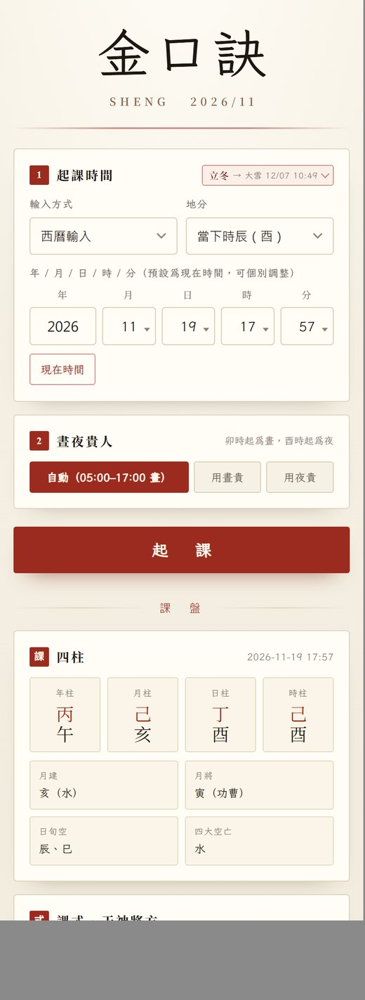
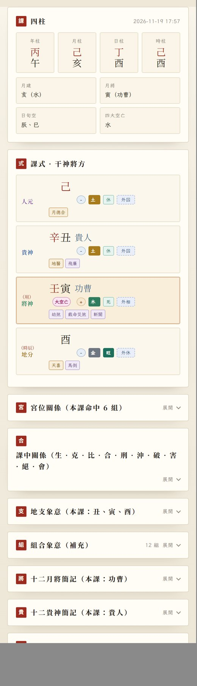
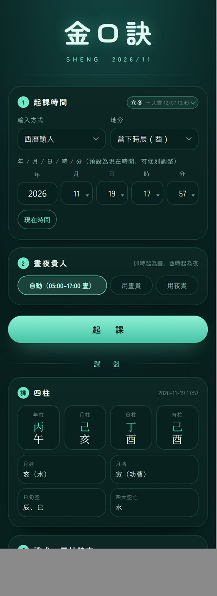
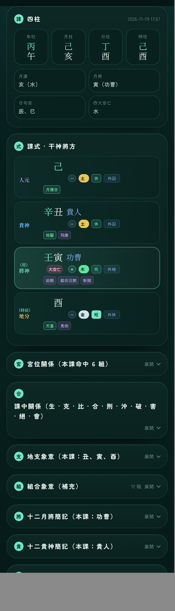
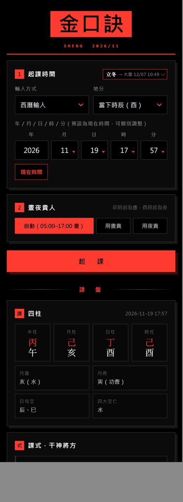
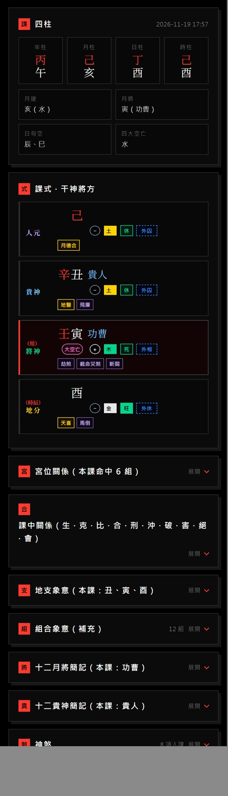

A
宣紙文楷
淺米紙底 · 楷書 · 朱紅
- 字體：LXGW 文楷（楷書），標題字距放寬
- 配色：宣紙米白、墨黑、朱紅單一重點色
- 形狀：卡片近直角、分頁改為紅線底線式

課盤

開啟 A 版（現行正式版）→
B
青瓷粉圓
深青底 · 圓體 · 薄荷青
- 字體：Zen Maru Gothic 圓體，轉角圓潤
- 配色：青瓷深綠、薄荷青，無金色
- 形狀：大圓角卡片、藥丸形分頁與按鈕

課盤

開啟 B 版→
C
朱墨極黑
純黑 · 粗黑體 · 朱紅塊面
- 字體：粗黑體、標題紅底黑字塊面
- 配色：純黑＋朱紅，高對比、無灰調
- 形狀：全部直角、硬陰影、方形標籤

課盤

開啟 C 版→